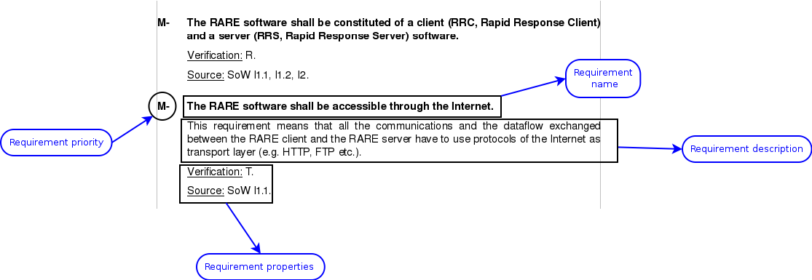

The content extraction process is provided by the Apache POI library (the Java API for Microsoft Documents), http://poi.apache.org/.
- The extraction is fairly based on the style associated to paragraphs. You have to define a specific style for the content you want to extract.
- Execute the code located in net.trevize.rare.WordDocExtractor to list the styles encapsulated in your Word document.
- Search for the styles you have defined and modify the class net.trevize.rare.WordDocExtractor to parse your content and create Requirement objects (actually your implementation of the Requirement interface).
Figure 6:
Screenshot of a Word document and a user requirement.
|
 |
Nicolas James
2011-07-19